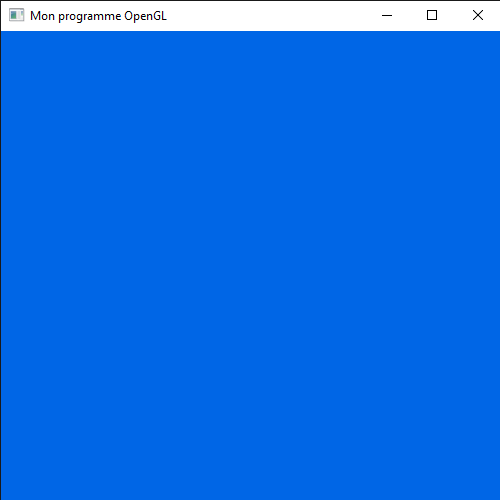
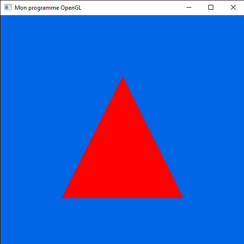
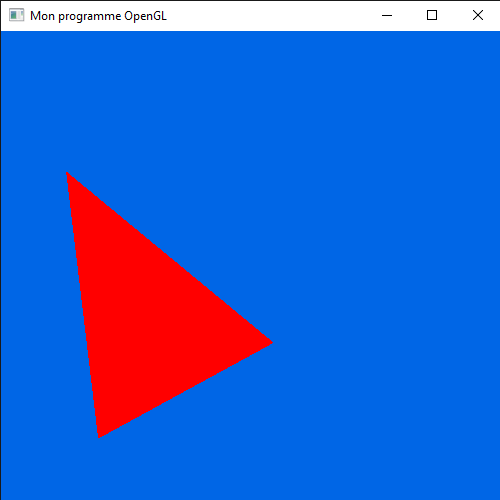

a. Mettre en place votre environnement
Disons le, OpenGL est une librairie assez complexe à utiliser.
Pour y accéder, chaque systèmes d'exploitations offrent nativement différents outils pour y accéder.
Cependant, pour gagner du temps, nous allons utiliser des librairies C++ qui permettent d'utiliser simplement tout ça.
Nous allons utiliser 3 librairies : GLFW, Glad et GLM.
GLFW va être un moyen simple d'utiliser un contexte OpenGL.
En effet, elle est pleine de fonctions très utiles pour travailler avec OpenGL.
Elle a l'avantage d'être cross-platforme et en libre accès.
Pour installer GLFW, rendez vous sur cette page.
Vous pouvez télécharger le code source et le compiler vous même, ou utiliser du code pré-compilé.
Pour rappel, nous avons déjà traité de l'utilisation de librairies de ce genre, dans ce cours là.
Vous devrez théoriquement avoir accès a un DLL, deux fichiers librairies, et un ensemble de headers.
Glad va avoir pour tâche de rendre notre code OpenGL cross-plateforme.
En effet, comme nous l'avons vu, chaque plateforme propose sa propre implémentation d'OpenGL.
Glad réuni tous les types possibles, et les rend accessibles selon la plateforme actuelle grâce au système de template.
Pour installer Glad, rendez vous sur cette page.
Elle vous demandera pas mal de configuration pour le fichier environnement généré.
Comme langage, sélectionnez "C/C++"". Comme spécification, sélectionnez "OpenGL". Comem API, sélectionnez "Version 3.3" dans "gl" (Comme sur notre cours d'OpenGL). Comme "Profile", choisissez "Core".
Cependant, à l'inverse de GLFW, Glad ne propose pas de fichiers pré-compilés.
Le site vous proposera un dossier de headers, ainsi qu'un fichier "glad.c", à ajouter aux fichiers compilés de votre code.
Finalement, GLM va nous apporter un ensemble d'outils mathématiques, très importants pour OpenGL.
En effet, les mathématiques nécessaires seront très avancés ici.
Heuresement, GLM en propose une partie.
Pour installer GLM, rendez vous sur cette page.
Vous y trouverez l'ensemble du projet GLM.
Vous aurez besoin de tous les headers présents dans le dossier "glm".
Dans cette librairie, il n'y a que des headers.
Dés que tout cela est installé, vous pouvez créer votre projet pour commencer à travailler avec OpenGL.
b. Créer votre première fenêtre
Pour créer notre première fenêtre avec OpenGL, il va falloir commencer à écrire le code permettant de configurer OpenGL.
Nous vous conseillons grandement de bien le structurer, pour pouvoir l'utiliser de manière plus simple.
Cependant, si vous avez la flemme (déconseillé), vous pouvez tout mettre directement dans la fonction "main" de votre code.
Avant tout, initialisons GLFW, avec quelques simples lignes de code.
// Initialisation de GLFW
glfwInit();
glfwWindowHint(GLFW_CONTEXT_VERSION_MAJOR, 3);
glfwWindowHint(GLFW_CONTEXT_VERSION_MINOR, 3);
glfwWindowHint(GLFW_OPENGL_PROFILE, GLFW_OPENGL_CORE_PROFILE);
Ces fonctions sont assez claires : "glfwInit()" initialise GLFW, et
"glfwWindowHint()" permet de configurer certaines valeurs de GLFW, grâce à deux paramètres : la configuration à modifier, et sa nouvelle valeur.
Dans ce cas, nous configurons la version (majeure et mineure) d'OpenGL, en 3.3 ici, puis nous indiquons à GLFW que nous utiliser la version "core" d'OpenGL (téléchargée plus haut via Glad).
En suite,
créeons notre contexte OpenGL.
// Création du contexte OpenGL
GLFWwindow* window = glfwCreateWindow(500, 500, "Mon programme OpenGL", NULL, NULL);
if (window == NULL) {
std::cout << "Failed to create GLFW window" << std::endl;
glfwTerminate();
}
glfwMakeContextCurrent(window);
Ces fonctions restent aussi assez claires : "glfwCreateWindow()" crée la fenêtre pour OpenGL et la retourne sous forme de pointeur vers un objet
"GLFWwindow", la condition vérifie si la création a bien eu lieu, et "glfwMakeContextCurrent()" indique à GLFW (et, indirectement, à l'OS du PC) que le contexte actuel du programme est le contexte passé en paramètre.
Nous pouvons constater la fonction
"glfwTerminate()" dans la condition, qui a pour tâche de décharger GLFW pour le programme (si il doit s'arrêter).
Attardons nous sur
"glfwCreateWindow()".
Elle prend beaucoup de paramètres.
Les deux premiers représentent la largeur et la hauteur de la fenêtre.
Le troisième représente le titre affiché en haut à gauche de la fenêtre.
Le quatrième représente un pointeur vers un objet
GLFWmonitor.
Si ce pointeur est utilisé, alors le programme va être en plein écran sur l'écran demandé.
Sinon (comme maintenant), il ne sera pas en plein écran.
Le cinquième permet de lier une autre fenêtre déjà crée avec celle-ci pour un partage de ressources entre fenêtre si besoin (nous n'en aurons pas besoin ici).
Si la fenêtre ne peut pas être générée, la fonction renvoie un pointeur nul, et la condition d'erreur est activée, affichant un mesage d'erreur et déchargeant GLFW.
En suite,
chargeons Glad.
// Chargement de Glad
if (!gladLoadGLLoader((GLADloadproc)glfwGetProcAddress)) {
std::cout << "Failed to initialize GLAD" << std::endl;
glfwTerminate();
}
Glad est chargé dans la fonction "gladLoadGLLoader()", qui renvoie "true" si le chargement est bon, ou "false" si il n'est pas bon.
Si il ne l'est pas, la condition d'erreur est activée, affichant un mesage d'erreur et déchargeant GLFW.
Cette fonction est assez complexe : elle prend la fonction
"glfwGetProcAddress()" de GLFW en paramètre, retournant un pointeur vers la bonne API OpenGL utilisée par le contexte actuel.
N'hésitez pas à aller voir la documentation si cette fonction vous intéresse.
Dés que tout cela est fait,
la partie configuration est terminée.
Maintenant, nous allons implémenter la boucle qui va permettre à notre programme de tenir dans le temps.
Tout aura lieu dans une boucle, qui s'arrêtera en même temps que le programme.
La boucle aura cette allure :
// Boucle de temps
while(!glfwWindowShouldClose(window)) {
}
glfwTerminate();
Ici,
"glfwWindowShouldClose()" vérifiera si la fenêtre doit se fermer.
Après avoir fermer la fenêtre, on décharge GLFW avec "glfwTerminate()".
Si nous lançons le programme comme ça, rien ne va se passer, et le programme ne pourra même pas se fermer tout seul.
Pour utiliser la fenêtre, nous allons modifier l'intérieur de la boucle.
// Boucle de temps
while(!glfwWindowShouldClose(window)) {
// Préparer l'affichage OpenGL
glClearColor(0, 0.4, 0.9, 1.0);
glClear(GL_COLOR_BUFFER_BIT);
// Met à jour OpenGL
glfwSwapBuffers(window);
glfwPollEvents();
}
glfwTerminate();
Ce code rend la page tout à fait utilisable : décrivons le étape par étape.
"glClear()" permet de remettre les zones mémoires générées auparavant d'OpenGL à 0 (ou ne fait rien si aucune zone mémoire n'a été générée).
Comme ça, vous n'encombrez pas la mémoire de choses inutiles.
Ici, on passe en paramètre "GL_COLOR_BUFFER_BIT", pour n'effacer que la partie "couleur" d'OpenGL (l'ancienne zone d'affichage).
Il s'agit d'une fonction de base d'OpenGL (rendue utilisable par Glad).
Cependant,
OpenGL va remplir la nouvelle zone de mémoire d'affichage par une nouvelle couleur, spécifiée via la fonction glClearColor().
Elle prend 4 paramètres : les valeurs RGBA de la couleur nécessaire (qui peuvent être des valeurs sur 255, ramenée à entre 0 et 1).
Ces valeurs doivent être entre 0 et 1.
Ici, il s'agit d'un bleu ciel (le même que la couleur d'arrière plan de la fenêtre nouvellement crée).
En suite,
on demande à GLFW de confirmer l'affichage de la fenêtre, qui va être envoyée à la carte graphique avec glfwSwapBuffers().
Finalement,
"glfwPollEvents()" met à jour les évènements ayant eu lieu depuis le dernier appel de la fonction (clique de souris, entré clavier, fermeture de la fenêtre...).
Cet données seront par la suite accessible via des fonctions, que nous verrons plus tard.
Maintenant que cette fenêtre est crée, commençons à la rendre utilisable.

c. Créer des objets OpenGL
Pour pouvour utiliser pleinement OpenGL, nous allons créer des objets dans OpenGL.
Comme nous l'avons vu dans la présentation d'OpenGL, les objets OpenGL sont utilisés via des VAOs, des VBOs et des shaders.
Commençons par le plus simple : les VBOs.
Pour des raisons de simplicité, nous mettrons l'entiereté des données d'un VBO dans une structure.
// Structure pour un VBO
struct VBO {
// Id du VBO
unsigned int id;
// Points dans le VBO
std::vector<float> points;
};
Nous l'étudierons plus précisément plus tard.
Pour passer des VBOs à OpenGL,
il vous faut une liste de points.
Ici, notre liste sera dans le vecteur "points".
Pour commencer simplement, faisons un simple triangle (pour rappel, OpenGL ne peut qu'afficher des triangles).
// Création du VBO nécessaire
VBO triangle;
// Création d'un triangle
vbo->points.push_back(-0.5);vbo->points.push_back(-0.5);vbo->points.push_back(0);
vbo->points.push_back(0.5);vbo->points.push_back(-0.5);vbo->points.push_back(0);
vbo->points.push_back(0);vbo->points.push_back(0.5);vbo->points.push_back(0);
Dans une fenêtre OpenGL, les extrémités (gauche / droite, bas / haut) représentent les coordonnées -1 et 1.
Dés que cela est fait,
nous allons les passer à OpenGL.
// Attribution d'un espace mémoire pour le VBO
glGenBuffers(1, &triangle.id);
// Passage du VBO à OpenGL
glBindBuffer(GL_ARRAY_BUFFER, triangle.id);
glBufferData(GL_ARRAY_BUFFER, sizeof(float) * triangle.points.size(), triangle.points.data(), GL_STATIC_DRAW);
Premièrement, obtenons de la part d'OpenGL une partie de mémoire, via la fonction
glGenBuffers().
Son premier paramètre représente le nombre d'objets OpenGL que nous allons crée (ici, qu'un seul VBO), et le deuxième représente une référence vers un nombre (unsigned int), qui aura une valeur que nous pourrons utiliser pour accéder à cet objet OpenGL.
En suite, nous indiquons à OpenGL que nous allons utiliser la partie de mémoire créée comme le VBO actuellement utilisé (GL_ARRAY_BUFFER) par OpenGL grâce à la fonction
glGenBuffers().
Finalement,
nous envoyons dans cette partie de mémoire les données du VBO.
Pour cela, nous utilisons la fonction
glBufferData(), permettant d'envoyer des données dans une zone de mémoire OpenGL.
Le premier paramètre représente l'endroit où envoyer les données (ici, le VBO actuellement utilisé, défini plus haut).
Le deuxième paramètre représente la taille en octet de données que nous allons passer à la mémoire.
Nous n'allons passer que des "float" (4 octets de mémoire), autant qu'il y en a dans le vecteur des points du triangle.
Le troisième paramètre nous permet d'indiquer les données à passer à la mémoire.
Elle prend en paramètre un pointeur vers un tableau de données C++.
Ici, nous lui passons un pointeur vers les données du vecteur sous forme de tableau, grâce à la méthode "data".
Finalement, le dernier paramètre représente la façon dont OpenGL doit écrire les données.
La méthode "GL_STATIC_DRAW" est la plus rapide à utiliser, mais sera plus longue à modifier dans le futur si besoin (nous ne le ferons pas ici).
Pour en finir, il nous faut ajouter un moyen de supprimer les données allouées par OpenGL à la mémoire.
// Libère la mémoire allouée pour le VBO
glDeleteBuffers(1, &triangle.id);
La fonction
glDeleteBuffers() fonctionne de la même manière que "glGenBuffers()", vue plus haut.
Cette opération doit être effectuée après la boucle d'éxecution.
Maintenant,
votre VBO est bien chargé dans la mémoire d'OpenGL.
En suite, nous allons passer le shader vers OpenGL.
Pour commencer, il vous faudra vos deux shaders nécessaires : un vertex shader et un fragment shader.
Nous allons simplement recopier une version simplifiée de ceux dans le cours d'introduction à OpenGL.
// Vertex
// Version d'OpenGL
#version 330 core
// Données du VBO (vec3 représente un point 3D)
layout(location = 0) in vec3 pos; // Position du point P
// Fonction de base du shader
void main() {
// Calcul du point retourné par le shader
gl_Position = vec4(pos.xyz, 1.0);
}
// Fragment
// Version d'OpenGL
#version 330 core
// Couleur sortie du shader
out vec4 FragColor;
// Fonction de base du shader
void main() {
// Calcul de la couleur nécessaire, avec ici le rouge, ou RGBA(255, 0, 0, 255)
FragColor = vec4(1, 0, 0, 1);
}
Ce code utilise un langage très proche du C : GLSL.
Comme en C, la fonction principale du programme est "maine()", qui ne retourne rien.
Le type vec3 correspond à un vecteur de 3 flottants et vec4 correspond à un vecteur de 4 flottants.
Ici, le "#version 330 core" permet de spécifier la version d'OpenGL utilisé ici.
Les variables définis avec "out" signifient que le shader retourne ces variables pour le prochain shader.
"FragColor" représente la couleur pour le pixel traité par le shader.
Cependant, certaines variables sont directement incluses à OpenGL, comme "gl_Position", qui représente la position précise d'un point du VBO (que nous pouvons modifier pour bouger l'objet).
À l'inverse,
les variables définis avec "in" signifient que le shader reçoit ces variables depuis le dernier shader (ou depuis le VBO dans le cas du vertex shader).
Dans le vertex shader, "layout(location = x)" permet de dire à shader d'aller chercher une certains variable dans le VBO, acomme étant la "x ième" variable traitée pour un point du VBO.
Nous verrons comment utiliser ça précisement un peu après.
Plaçons ces codes dans des "std::string", que nous appellerons respectivement "vertex_shader" et "fragment_shader".
Ces codes vont être directement compilés par OpenGL.
// Compilation du fragment shader
unsigned int fragment = glCreateShader(GL_FRAGMENT_SHADER);
char* current_shader = new char[fragment_shader.size()];
for(int i = 0;i<fragment_shader.size();i++){current_shader[i]=fragment_shader[i];}
int shader_size = fragment_shader.size();
glShaderSource(fragment, 1, ¤t_shader, &shader_size);
glCompileShader(fragment); delete current_shader;
// Compilation du vertex shader
unsigned int vertex = glCreateShader(GL_VERTEX_SHADER);
current_shader = new char[vertex_shader.size()];
for(int i = 0;i<vertex_shader.size();i++){current_shader[i]=vertex_shader[i];}
glShaderSource(vertex, 1, ¤t_shader, &shader_size);
glCompileShader(vertex); delete current_shader;
Le code est quasiment le même pour les deux shaders.
Nous commençons par créer un simple shader (de type GL_FRAGMENT_SHADER ou GL_VERTEX_SHADER) grâce à la fonction
glCreateShader().
Elle retourne ensuite un ID, qui permettra d'accéder au shader nouvellement créé.
En suite,
nous spécifions au shader nouvellement créé le code qui le constitue, grâce à glShaderSource().
Cette fonction prend en premier paramètre le shader à traiter (via son ID).
Le deuxième paramètre permet de savoir combien de shaders vont être compilés (qu'un seul ici).
Le troisième paramètre est assez spécial.
Il s'agit d'un pointeur VERS un pointeur VERS le contenu du shader, sous forme de tableau de caractère.
C'est pour cela que nous le créeons dans un nouveau tableau de caractère, grâce à "current_shader" et à la boucle.
Finalement, le dernier paramètre prend un pointeur vers une variable contenant la taille du shader a compilé.
Dés que le shader est entièrement passé,
il est compilé avec glCompileShader().
N'oubliez pas de supprimer le tableau de caracètre crée à la fin, pour ne pas perdre d'espace mémoire.
Dés que cela est fait, nous devons nous assurer que rien n'est arrivé pendant la compilation.
// Vérifier le fragment shader
int success = 0;
char infoLog[512];
glGetShaderiv(fragment, GL_COMPILE_STATUS, &success);
if (!success) {
glGetShaderInfoLog(fragment, 512, NULL, infoLog);
std::cout << "Erreur de compilation sur le fragment" << std::endl << infoLog << std::endl;
}
// Vérifier le vertex shader
success = 0;
glGetShaderiv(vertex, GL_COMPILE_STATUS, &success);
if (!success) {
glGetShaderInfoLog(vertex, 512, NULL, infoLog);
std::cout << "Erreur de compilation sur le vertex shader" << std::endl << infoLog << std::endl;
}
Ici,
glGetShaderiv() permet de récupérer une information sur le shader.
Le premier paramètre représente le shader à tester, le deuxième représente l'information à tester, et le troisième représente une référence vers un entier contenant la réponse de la fonction.
Si le shader n'a pas pu être compilé,
on cherche ce qui ne va pas grâce à la fonction glGetShaderInfoLog().
Son premier paramètre représente le shader à tester, le deuxième représente la taille maximale des informations sorties par la fonction, la troisième représente un pointeur vers une variable contenant la taille réelle renvoyée et la quatrième représente l'endroit où écrire l'information.
Nous afficheons en suite cette erreur à l'écran.
Si tout cela fonctionne, alors nous pouvons finir de créer notre shader.
// Génération du shader dans OpenGL
unsigned int shader_program = glCreateProgram();
glAttachShader(shader_program, vertex);
glAttachShader(shader_program, fragment);
glLinkProgram(shader_program);
Nous commençons par créer un programme entier de shader via
glCreateProgram(), encore une fois sous la forme de "unsigned int".
Après,
nous attachons les programmes compilés à ce programme avec glAttachShader().
Finalement, vous liez le programme final avec
glLinkProgram(), et le tour est joué.
Il reste trois dernière étapes avant d'en finir.
// Vérifier le shader final
success = 0;
glGetProgramiv(shader_program, GL_LINK_STATUS, &success);
if (!success) {
glGetProgramInfoLog(shader_program, 512, NULL, infoLog);
std::cout << "Erreur de compilation" << infoLog << std::endl;
}
// Supression des ressources inutiles
glDeleteShader(vertex);
glDeleteShader(fragment);
Nous commençons par une dernière vérification du shader, puis nous supprimons les shaders compilé (le nouveau programme de shader en aura fait une copie).
Dés que tout cela est fait, il ne nous reste plus qu'à préciser au shaders les paramètres d'entrées du vertex shader.
// Shader actuellement utilisé
glUseProgram(shader_program);
// Paramètre nécessaire
int taille_actuelle = 0;
glVertexAttribPointer(0, 3, GL_FLOAT, GL_FALSE, 3, (void*)taille_actuelle);
glEnableVertexAttribArray(0);
Nous définissons "shader_program" comme le shader actuellement utilisé avec
glUseProgram().
En suite, nous définissons une nouvelle entrée pour le vertex shader, via
glVertexAttribPointer().
Le premier paramètre prend la position de l'entrée actuelle passée.
Si vous passez plusieurs entrée (ce que nous ferons plus tard), il faut mettre le nombre nécessaire pour chaque entrées.
Le deuxième paramètre représente le nombre de données prise par cette variable.
En d'autre terme,
il s'agit de la taille du vecteur représenté par cette variable (ou 1 si il ne s'agit pas d'un vecteur).
Le troisième paramètre représente le type d'un composant du vecteur, ici un "float".
Le quatrième paramètre indique si OpenGL doit normaliser le vecteur ou non.
Le cinquième paramètre représente le nombre total d'octets entre deux occurences de cette entrée dans le VBO.
Pour finir, le dernier paramètre représente le décalage nécessaire à partir du début de toutes les données dans un shader par rapport à la première donnée pour arriver à celle-ci.
En quelque sorte,
c'est la position de cette donnée par rapport aux autres.
Plus précisement, il s'agit d'un pointeur vers une variable contenant cette donnée (ici taille_actuelle).
Petite précision : cette fonction nécessite que le VBO est déjà été crée et qu'il soit défini comme VBO actuel d'OpenGL : nous verrons comment bien s'organiser avec ça après.
En suite, cette entrée (ou du moins, l'entrée ayant comme position le paramètre de la fonction) est validée au shader par
glEnableVertexAttribArray().
Finalement, comme toujours, nous devons libérer la mémoire à la fin du programme.
// Suppression de la mémoire
glDeleteProgram(shader_program);
Maintenant, nous pouvons utiliser ce shader.
Finalement, nous allons pouvoir commencer à créer le shader.
Cependant, cette étape va devoir reprendre toutes les étapes que nous avons vu dans cette partie.
Donc, nous allons créer pleins de fonctions, qui reprennent tout ce que l'on n'a fait sous un seul nom.
-
Le chargement d'un VBO (plaçage des points dans l'espace mémoire) sera assurée par une fonction "charger_vbo".
-
La création et chargement d'un shader sera assurée par une fonction "creer_shader".
-
La création d'un VBO (de ces points et de son espace mémoire) sera assurée par une fonction "creer_vbo".
-
La suppression d'un shader sera assurée par une fonction "supprimer_shader".
-
La suppression d'un VBO sera assurée par une fonction "supprimer_vbo".
Après tout ça, votre code avant la boucle devrait ressembler à ça.
// Créer le VBO
VBO* vbo = creer_vbo();
charger_vbo(vbo);
// Créer le shader
unsigned int shader = creer_shader();
Nous allons partir de cette base pour créer le VAO.
Commençons par créer le VAO dans la mémoire.
// Créer le VAO
unsigned int vao;
glGenVertexArrays(1, &vao);
Ici, c'est
glGenVertexArrays() qui s'en occupe, toujours avec le système de "unsigned int".
Une fois le VAO crée, attachons-y le VBO, que nous créeons donc à cet instant là.
// Attache du VBO
glBindVertexArray(vao);
VBO* vbo = creer_vbo();
charger_vbo(vbo);
L'ordre d'appel est très important ici, et c'est pour ça qu'on a découpé le programme en fonctions plus précises.
Nous commençons par fait de "vao" le VAO actuellement utilisé par OpenGL avec
glBindVertexArray(), puis nous créeons le VBO juste après.
En suite, viens la création du shader, qui doit avoir lieu après celle du VBO (comme nous avons vu plus haut).
// Créer le VAO
unsigned int vao;
glGenVertexArrays(1, &vao);
// Attache du VBO
VBO* vbo = creer_vbo();
glBindVertexArray(vao);
charger_vbo(vbo);
// Créer le shader
unsigned int shader = creer_shader();
Maintenant que tout cela est fait,
utilisons notre VAO pour effectuer un rendu fonctionnel.
Tout ce qui va suivre doit, en toute logique, se trouver dans la boucle d'exécution.
// Dessin du triangle
// Shader actuellement utilisé
glUseProgram(shader);
// Tracer les points via le VAO
glBindVertexArray(vao);
glDrawArrays(GL_TRIANGLES, 0, vbo->points.size() / 3.0);
Nous devons réutiliser la fonction "glUseProgram()", pour dire à OpenGL qu'on utilise ce shader.
En suite, nous définissons "vao" comme la VAO utilisé actuellement par OpenGL, grâce à "glBindVertexArray()".
Pour finir,
le traçage des formes sur le contexte actuel est ordonné par la fonction glDrawArrays().
Elle prend en premier paramètre le type de forme à tracer, en deuxième paramètre le décalage nécessaire de données dans le VBO pour commencer le traçage (avec ici aucun décalage), et finalement en troisième paramètre le nombre de points à tracer.
Théoriquement,
votre triangle devrait être bien tracé sur votre fenêtre OpenGL.

d. Communiquer avec les objets OpenGL
Imaginez que vous vouliez bouger votre objet.
Comment faire ?
On peut penser qu'il faut agir sur le VBO, mais modifier le VBO à chaque boucle prendrait beaucoup de temps.
À la place, nous allons utiliser un système permettant de communiquer de manière rapide et simple avec les shaders : les variables "uniform".
En effet, les variables notées "in" dans le shader ne peuvent pas être modifiée sans modifier le VBO.
Les variables "uniform" peuvent être modifiée quand vous le souhaitez depuis le programme principal.
Pour bouger le shader, c'est ici que les mathématiques et GLM entrent en jeu.
En effet, notre vertex shader prend des points 3D, nous devons donc utiliser un moyen mathématique de bouger ces points 3D facilement.
Ici, on va utiliser le système de calcul matriciel.
Nous ne rentrerons pas dans les détails (GLM le fera pour nous), cependant les transformations que nous allons faire sont parfaitement applicables avec des matrices.
Nous allons appliquer des translations, des homothéties (remise à l'échelle, aggrandissement / rétrecissement) et des rotations.
Pour cela, nous aurons besoin de matrices de dimension 4X4.
Ajoutons la au shader.
// Vertex
// Version d'OpenGL
#version 330 core
// Données du VBO (vec3 représente un point 3D)
layout(location = 0) in vec3 pos; // Position du point P
// Données du programme principal
uniform mat4 transformation;
// Fonction de base du shader
void main() {
// Calcul du point retourné par le shader
gl_Position = transformation * vec4(pos.xyz, 1.0);
}
En GLSL, une matrice utilise le type "mat4".
Pour appliquer les transformations dans le shader, nous avons juste à multiplier la matrice aux coordonnées du points.
Finalement, ajoutons du code au programme principal, pour appliquer des transformations.
Nous devons commencer par inclure les librairies GLm que nous utiliserons ici.
#include <glm/glm.hpp>
#include <glm/gtc/matrix_transform.hpp>
#include <glm/gtc/type_ptr.hpp>
Nous pouvons maintenant commencer les choses sérieuses.
// Calcul de la transformation
glm::mat4 transformation = glm::mat4(1);
// Translation de la matrice
transformation = glm::translate(transformation, glm::vec3(-0.5, 0, 0.2));
// Rotation de la matrice
transformation = glm::rotate(transformation, 0.5f, glm::vec3(0, 0, 1));
// Remise à l'échelle de la matrice
transformation = glm::scale(transformation, glm::vec3(0.8, 1.0, 0.4));
// Shader actuellement utilisé
glUseProgram(shader);
// Passage de la variable uniforme
int variable_uniform = glGetUniformLocation(shader, "transformation");
glUniformMatrix4fv(variable_uniform, 1, GL_FALSE, glm::value_ptr(transformation));
// Tracer les points via le VAO
glBindVertexArray(vao);
glDrawArrays(GL_TRIANGLES, 0, vbo->points.size() / 3.0);
Commençons par créer la transformation, avec une matrice 4X4, de type "glm::mat4".
Pour être précis, nous créeons ici une matrice diagonale (avec des 1).
En suite,
nous obtenons une matrice transformé par translation de "transformation", qui sera la nouvelle valeur de "transformation".
Pour cela, on utilise la fonction "translate()" de GLM, qui prend une matrice à transformer, ainsi que la translation à appliquer, et renvoie le résultat.
Nous faisons la même avec la rotation, grâce à la fonction "rotate()" de GLM.
Elle est un peu plus complexe : elle prend une matrice à transformer, ainsi qu'un angle en radians (OBLIGATOIREMENT UN "FLOAT", pas de "double" autorisé), et finalement l'axe sur lequel appliquer la rotation (ici l'axe Z).
En effet, en 3D, les rotations se font autour d'un axe.
Finalement, on utilise la fonction "scale()" de GLM, qui prend une matrice à transformer, ainsi que la remise à l'échelle à appliquer, et renvoie le résultat.
Dés que cela est fait,
nous passons cette matrice au shader.
Cette étape doit impérativement avoir lieu après "glUseProgram(shader)".
Pour cela, nous commençons par obtenir un "int" pour accéder à la variable uniform "transformation" du shader "shader", grâce à
glGetUniformLocation().
Finalement, nous passons la variable au shader, avec
glUniformMatrix4fv.
Son premier paramètre représente "l'int" d'accés à la variable.
Le deuxième renvoie le nombre de données qui vont être passées, et la troisième si la matrice doit être transposer (une opération matricielle, ici inutile) ou non.
Le dernier paramètre fourni à OpenGL un pointeur vers les données de la matrices, se trouvant à l'adresse renvoyée par "glm::value_ptr(transformation)".
Si tout est bien fait, votre triangle devrait subir ses première transformations.
En modifiant les valeurs comme vous voulez, vous pouvez faire faire ce que vous voulez à votre triangle.

Pour utiliser pleinement ce système, il y a quelques petits détails à rajouter.
Premièrement, vous pouvez dessiner avec un même VAO et un même shader autant que vous voulez en une fois, en modifiant seulement les variables "uniform" si vous le souhaitez.
Par exemple, vous pouvez très bien créer un "std::vector" (une liste dynamique) de différentes transformations, et toutes les dessiner à chaque fois.
Comme ça, vous pouvez faire des choses plus complètes.
De plus, il est tout à fait possible de faire bouger (ou tourner, ou grossir / rétrécir) dans le temps des objets.
Dans ce cas, à chaque frame, l'objet occupera une position différente.
Bien que vous ayez beaucoup de façon de faire, je vais vous en montrer une assez générale.
Première, vous aurez besoin d'un indicateur de temps, ici une fonction que nous appellerons "time_ns()", et qui renvoie le nombre de nano-secondes depuis 1970.
// Retourne le nombre de nano-secondes depuis 1970
long long time_ns() {
timespec ts;
clock_gettime(CLOCK_REALTIME, &ts);
return static_cast<long long>(ts.tv_nsec) + static_cast<long long>(ts.tv_sec) * 1000000000;
};
À chaque début de frame, stocker le temps actuel dans une variable (de type "long long"), et comparez le avec l'ancienne valeur stockée (sauf si aucune valeur n'est déjà stockée).
Vous aurez la durée en nano-secondes de la dernière frame (divisez là par 1 milliard pour obtenir le temps en secondes).
// Obtenir la durée en seconde de la dernière frame
long long temps_actuel = time_ns();
long long duree_frame_en_seconde = static_cast<double>(temps_actuel - dernier_temp) / 1000000000.0;
dernier_temp = temps_actuel;
Comme ça, vous saurez de quel distance l'objet à bouger PENDANT la dernière frame, ce qui vous permettra de bouger correctement l'objet.
En suite, vous pouvez définir une variable de type "glm::vec3" / "double" / tout ce que vous voulez, qui correspond à la position (ou rotation...) de l'objet, que vous changez à chaque frame.
Pour rendre vos animations plus complètes, il y a une dernière chose que vous pouvez faire.
Pour savoir quand et comment un utilisateur a intéragi avec le système d'exploitation, il existe plusieurs fonctions différentes : glfwGetKey() pour les touches du clavier, ou même glfwGetMouseButton() pour les touches de la souris.
Comme ça, vous pouvez faire à ce que la réaction de l'objet dépende des entrées de l'utilisateur.
// Obtenir l'état de la touche "A" du clavier
int touche_a = glfwGetKey(window, GLFW_KEY_A);
if (touche_a == GLFW_PRESS) {std::cout << "La touche A est pressée." << std::endl; }
// Obtenir l'état de la touche gauche de la souris
int etat_souris_gauche = glfwGetMouseButton(window, GLFW_MOUSE_BUTTON_LEFT);
if (etat_souris_gauche == GLFW_PRESS) {std::cout << "La touche gauche de la souris est pressée." << std::endl; }
Petit bonus : voici le VBO nécessaire pour réaliser un carré.
// Création du VBO nécessaire
VBO triangle;
// Création d'un triangle
vbo->points.push_back(-0.5);vbo->points.push_back(0.5);vbo->points.push_back(0);
vbo->points.push_back(-0.5);vbo->points.push_back(-0.5);vbo->points.push_back(0);
vbo->points.push_back(0.5);vbo->points.push_back(-0.5);vbo->points.push_back(0);
vbo->points.push_back(0.5);vbo->points.push_back(0.5);vbo->points.push_back(0);
vbo->points.push_back(-0.5);vbo->points.push_back(0.5);vbo->points.push_back(0);
vbo->points.push_back(0.5);vbo->points.push_back(-0.5);vbo->points.push_back(0);